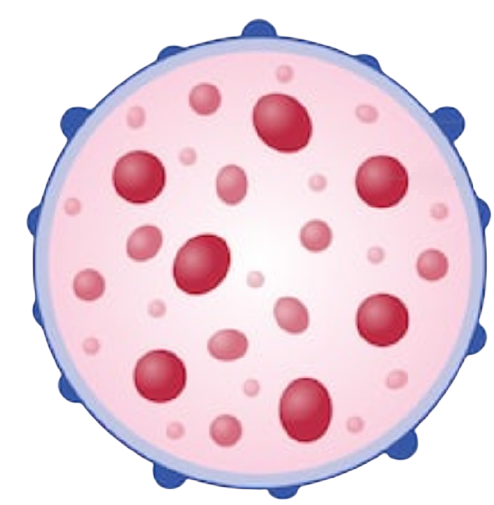
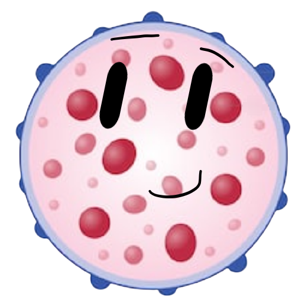
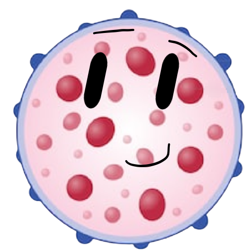
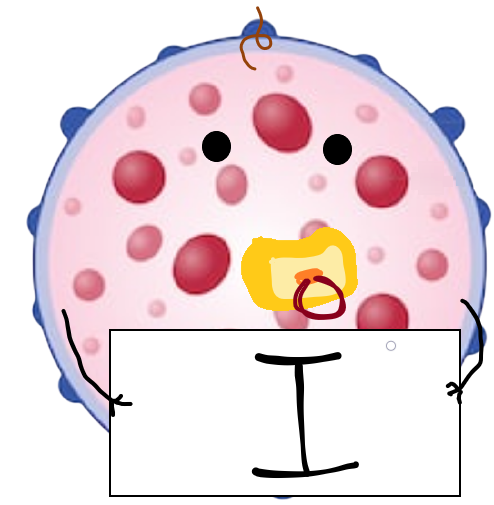
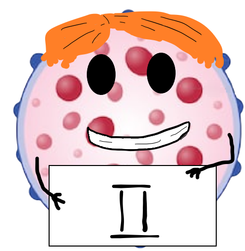

ლიზოსომა ორგანოიდია, რომელიც მომნელებელ ფერმენტებს შეიცავს და სხვა ორგანოიდების გადამუშავება ევალება ცხოველურ უჯრედში. ლიზოსომა შეიცავს ჰიდროლიზურ ფერმენტებს, რომლებსაც შეუძლიათ მრავალი სახის ბიომოლეკულების დაშლა და ამით, იგი ძველ და უსარგებლო სტრუქტურებს შლის, რათა მათი მოლეკულების ხელახლა გამოყენება მოხერხდეს. ლიზოსომები ენდომემბრანული სისტემის ნაწილია და გოლჯის აპარატიდან გამოკვირტული ბუშტუკების ნაწილი მათთან შესარწყმელადაა განკუთვნილი.

ლიზოსომა
ნიკოლოზ ტუხაშვილი
აღმოჩენილია კრისტიან დე დიუვემის მიერ
პოლიმერების დეგრადაციის გარდა, ლიზოსომა მონაწილეობს უჯრედის სხვადასხვა პროცესებში, მათ შორის სეკრეციაში, პლაზმური მემბრანის შეკეთებაში, აპოპტოზში, უჯრედის სიგნალში და ენერგიის მეტაბოლიზმში.
 

xs


ლიზოსომური ფერმენტები სინთეზირდება (ანუ იგება) მარცვლოვან ენდოპლაზმურ ბადეზე, საიდანაც გოლჯის აპარატში გადაიტანება და ლიზოსომად ყალიბდება. ლიზოსომას, რომლებიც გოლჯის აპარატიდან გამოდის პირველდი ლიზოსომა ეწოდება. პირველადი ლიზოსომა ძალიან მცირე ზომისაა მასში მონელების პროცესები არ მიმდინარეობს.
როდესაც პირველადი ლიზოსომა შეერწყმება ფაგოსომას მაშინ წარმოიქმნება მეორეული ლიზოსომა. მეორეული ლიზოსომა უფრო დიდი ზომისაა და პირველადი ლისზოსმისგან განსხვავებით მისი შიგთავსი ჰეტეროგენულია ანუ არაერთგვაროვანია. მეორეულ ლიზოსომაში მიმდინარეობს მონელების პროცესი.
ლიზოსომები მონაწილეობს უჯრედშიგა მონელების პროცესში. მაგალითად ისინი ინელებენ უჯრედის მიერ გარემოდან ათვისებულ ნივთიერებებს. ამის მაგალითია სისხლის ერთერთი თეთრი უჯრედი, მაკროფაგი, რომელიც იმუნური სისტემის ნაწილია. ფაგოციტოზის დროს მაკროფაგის პლაზმური მემბრანის ნაწილი ჩაიზნიქება, შიგნით ჩაღრმავდება და პათოგენურ მიკრობს გარს შემოერტყმის.
პლაზმური მემბრანის ჩაღრმავება, რომელშიც პათოგენია მოთავსებული, მოსწყდება მემბრანას, რის შემდეგაც ამ ბუშტუკს ფაგოსომა ეწოდება. ფაგოსომა ლიზოსომას ერწყმის და მასთან ქმნის ერთიან სივრცეს, რომელშიც მომნელებელი ფერმენტები პათოგენს შლის.
ლიზოსომის კიდევ ერთი დანიშნულება ციტოპლაზმური ორგანელების განახლებაა. მონელების პროდუქტები (დაბალმოლეკულური ნაერთები) ცხოველქმედების პროცესში უჯრედის მიერ ხელმეორედ გამოიყენება.
ამ პროცესს ჰეტეროფაგია ეწოდება. პირველი ეტაპი მოიცავს პლაზმის მემბრანის საშუალებით შესვლას საკვებ ვაკუოლში, ეს არის პროცესი, რომელსაც ენდოციტოზს უწოდებენ. მეორე ეტაპზე აქტიური ჰიდროლიზური ფერმენტის მქონე ლიზოსომა იწყებს მონაწილეობის მიღებას როდესაც საკვების ვაკუოლი დაშორდება პლაზმის მემბრანს. მესამე ეტაპი მოიცავს ლიზოსომის შერწყმას საკვებ ვაკუოლთან და ჰიდროლიზური ფერმენტებით შედიან საკვებ ვაკუოლში. საბოლოო ეტაპზე (მეოთხე ეტაპი), ჰიდროლიზური ფერმენტები ანელებენ საკვების ნაწილაკებს.
გარდა იმისა, რომ შეუძლიათ პოლიმერები დაშალონ, ლიზოსომებს შეუძლიათ ორგანოიდებთან შერწყმა და დიდი სტრუქტურების ან უჯრედული ნარჩენების მონელება. ფაგოსომებთან თანამშრომლობის გზით, მათ შეუძლიათ აუტოფაგიის ჩატარება, დაზიანებული სტრუქტურების გაწმენდა. ანალოგიურად, მათ შეუძლიათ დაანგრიონ ვირუსის ნაწილაკები ან ბაქტერიები მაკროფაგების ფაგოციტოზის დროს.
ლიზოსომების ზომა მერყეობს 0,1 მკმ – დან 1,2 მკმ – მდე. PH- ით 4,5-5,0 ~, ლიზოსომების ინტერიერი მჟავეა. ლიზოსომული მემბრანა იცავს ციტოზოლს და, შესაბამისად, დანარჩენ უჯრედს, ლიზოსომის შიგნით არსებული დეგრადაციული ფერმენტებისგან. უჯრედი დამატებით დაცულია ნებისმიერი ლიზოსომული მჟავის ჰიდროლაზებისაგან, რომლებიც ციტოზოლში გადაედინება.
ლიზოსომის pHს განსაზღვრავს ლიზოსომის მემბრანაში (ანუ ლიზოსომის კედელში) არსებული წყალბადის ტუმბო და ქლორის იონური არხები. წყალბადის ტუმბო ციტოპლაზმიდან ტუმბავს წყალბად იონებს (H+) . იგი ლიზოსომაში არსებულ ნატრიუმის იონებს (Na+) ცვლის წყალბადის იონებზე. ხოლო ქლორის არხს ქლორის იონები (Cl-) გადააქვს. ერთად ისინი წარმოქმნიან მარილმჟავას HCL. ასე იქმნება ლიზოსომაში მჟავა გარემო.